Bot para discord usando a biblioteca Discord.js.
Como surgiu a ideia?
A ideia surgiu entre uma brincadeira entre amigos, onde um de nossos amigos sempre dizia que voltaria em 10 minutos, no entanto sempre acabava atrasando. Sempre ficavamos tentando acertar quanto tempo ele demoraria e contando o tempo de atraso. Por conta disso, surgiu a ideia de criar um bot para o Discord que pudesse contar o tempo de atraso.
Após começar a fazer o bot, tive também a ideia de implementar a funcionalidade de tocar músicas no discord, pois em nosso servidores já utilizavamos um bot que tocava músicas, então fiquei com essa ideia de fazer algo parecido para ver como seria.
Tecnologias utilizadas
Funcionalidades
Exemplos:
Observação:
Para estes exemplos usaremos como prefixo dos comandos o Prefixo "+"", pois foi o prefixo configurado no arquivo config.json, caso baixe o bot e tente utiliza-lo o prefixo será o escolhido e configurado por você.
Contagem de tempo e atrasos:
Para esse exemplo usaremos um tempo de 5 minutos. Nesse caso, o comando seria "+joshua 5 minutos" (todos os comandos estarão disponiveis na seção Comandos).
Utilizando o comando no chat teremos a resposta:

Após isso, o bot contará um intervalo de 5 minutos (tempo escolhido como exemplo), e depois irá enviar a seguinte mensagem:
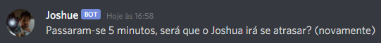Com o fim da contagem do tempo determinado, o bot irá começar a contagem de atraso, sendo informada de 10 em 10 minutos, com a seguinte mensagem:
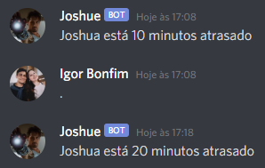Caso o comando "+voltou" seja utilizado o bot irá para de contar, tanto o intervalo informado quanto o tempo de atraso, e irá enviar a seguinte mensagem:
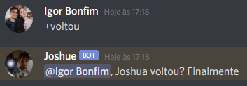Tocador de músicas:
Para que o bot toque música, o comando necessário é "+p" seguido da URL do vídeo ou o nome da música, primeiro adicionaremos uma música utilizando a URL do vídeo. Após isso o bot irá enviar uma mensagem de resposta e entrar no canal de voz, começando a tocar a música escolhida. Como mostrado na imagem a seguir:
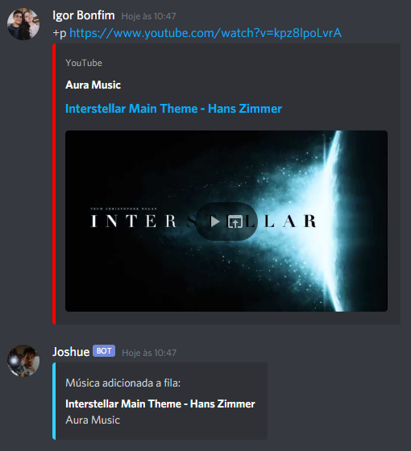Agora adicionaremos uma música na fila de reprodução utilizando o nome da música, nesse caso, o comando seria "+p nome da música". Após isso o bot irá enviar uma mensagem de resposta e entrar no canal de voz, começando a tocar a música escolhida. Como mostrado na imagem a seguir:
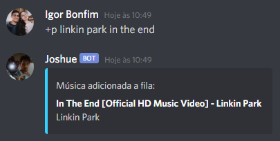Para pausar uma música o comando necessário é "+pausar", após isso o bot irá enviar uma mensagem sinalizando que a música foi pausada. Como mostrado na imagem a seguir:
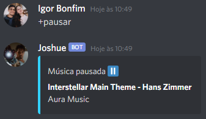Para continuar a reprodução da música é o comando necessário é "+continuar", após isso o bot irá enviar uma mensagem sinalizando que a música irá retornar a ser tocada. Como mostrado na imagem a seguir:
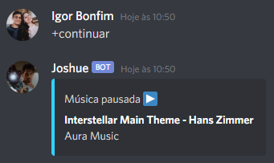O comando necessário para ver a fila de reprodução e as próximas músicas a serem tocadas é "+fila", após isso o bot irá enviar uma mensagem com todas as músicas que estão na fila e seus respectivos índices. Como mostrado na imagem a seguir:
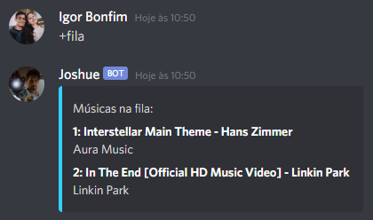O comando necessário para remover uma música da fila de reprodução é "+remover" seguido do indice da música na fila. Para esse caso, iremos remover a música "In the end", seu índice é o 2, como visto na imagem anterior, então o comando seria "+remover 2". Após isso o bot irá enviar uma mensagem sinalizando que a música foi removida. Como mostrado na imagem a seguir:
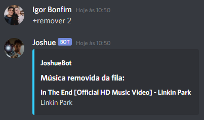Agora iremos utilizar o comando "+fila" novamente, para verificarmos se a música foi removida.
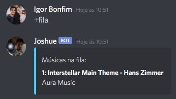O comando necessário para limpar a fila de reprodução é "+parar", ele também faz com que a música atual pare de tocar. Após isso o bot irá enviar uma mensagem informando que a fila de reprodução foi limpa. Como mostrado na imagem a seguir:
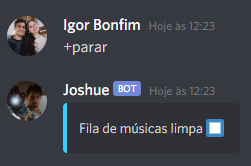Agora iremos utilizar o comando "+fila" novamente, para verificarmos se a fila está vazia.
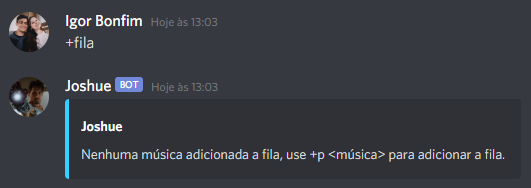Comandos
Prefixo + entrar
Comando utilizado para fazer com que o bot entre no canal de voz do Discord. (Comando não obrigatório, caso o comando de adicionar músicas seja utilizado antes do comando de entrar, o bot entrará no canal de voz automaticamente)
Exemplo: +entrar
Prefixo + p + URL da música
Comando utilizado para adicionar uma música na fila de reprodução usando a URL do vídeo.
Exemplo: +p https://www.youtube.com/watch?v=kpz8lpoLvrA
Prefixo + p + nome da música
Comando utilizado para adicionar uma música na fila de reprodução usando o nome do vídeo.
Exemplo: +p linkin park in the end
OBS: O bot tocará o primeiro vídeo encontrado na busca pela API do Youtube.
Prefixo + pausar
Comando utilizado para fazer com que o bot pause a música que está sendo tocada no momento.
Exemplo: +pausar
Prefixo + continuar
Comando utilizado para fazer com que o bot volte a tocar a música que foi pausada.
Exemplo: +continuar
Prefixo + proxima
Comando utilizado para fazer com que o bot encerre a música tocando atualmente e vá para a próxima música da fila de reprodução.
Exemplo: +proxima
Prefixo + fila
Comando utilizado para fazer com que o bot envie uma mensagem mostrando todas as músicas da fila de reprodução e seus índices.
Exemplo: +fila
Prefixo + remover + indice
Comando utilizado para fazer com que o remova da fila de reprodução a música do respectivo indice utilizado.
Exemplo: +remover 2
Prefixo + parar
Comando utilizado para fazer com que o bot pare de tocar a música tocando atualmente e limpar a fila de reprodução.
Exemplo: +parar
Prefixo + sair
Comando utilizado para fazer com que o bot saia do canal de voz. Também limpa a fila de reprodução.
Exemplo: +sair
Prefixo + joshua (tempo) minutos
Comando utilizado para fazer com que o bot começe a contar um intervalo de tempo, determinado na mensagem. (O intervalo de tempo deve sempre ser escrito em minutos)
Exemplo: +joshua 120 minutos (2 horas)
Prefixo + voltou
Comando utilizado para fazer com que o bot pare a contagem de tempo ou de atraso.
Exemplo: +voltou
Como utilizar?
1) O primeiro passo será fazer o download dos arquivos, que estarão disponiveis no GitHub clicando aqui ou no final da página.
2) O segundo passo será extrair os arquivos do bot em uma pasta.
3) O terceiro passo será abrir o console e pelo console entrar na pasta extraída. Para exemplo usaremos a pasta no desktop: 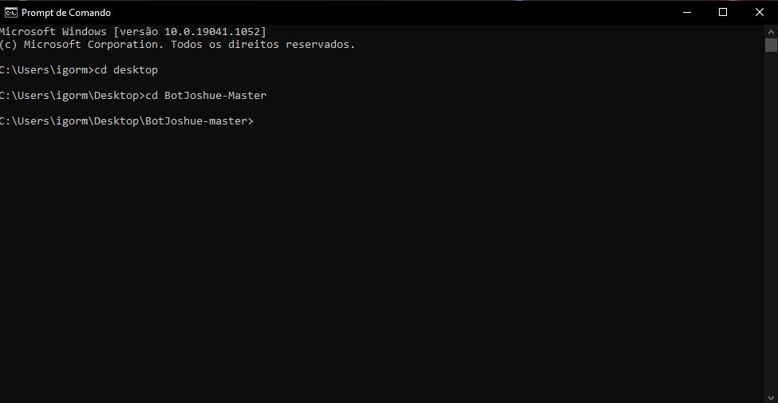
4) O quarto passo será ainda no console digitar npm install. Com isso, todas as dependencias do bot irão ser instaladas. (Vale lembrar que para que isso funcione será necessário ter o Node.js instalado no computador, você pode baixa-lo clicando aqui.) 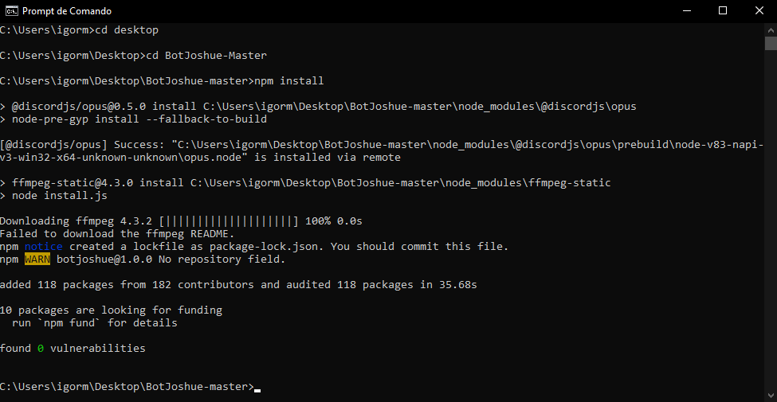
5) O quinto passo será criar um arquivo chamado config.json, assim como o da imagem a seguir, substituindo o "token_discord" pelo token do seu bot que pode ser obtido pelo site do Discord. e a "chave_google" pela chave que pode ser gerada no site do Google. 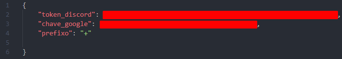
6) O sexto passo será no console, digitar node index.js. Caso a resposta seja "Joshue Bot está online", o bot já está pronto, basta abrir o discord e testa-lo. 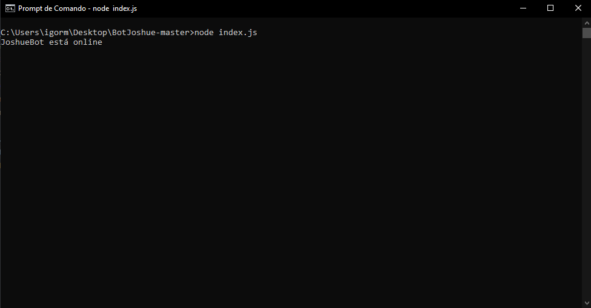
7) E por fim, teste o bot, utilizando os comandos apresentados na seção comandos.